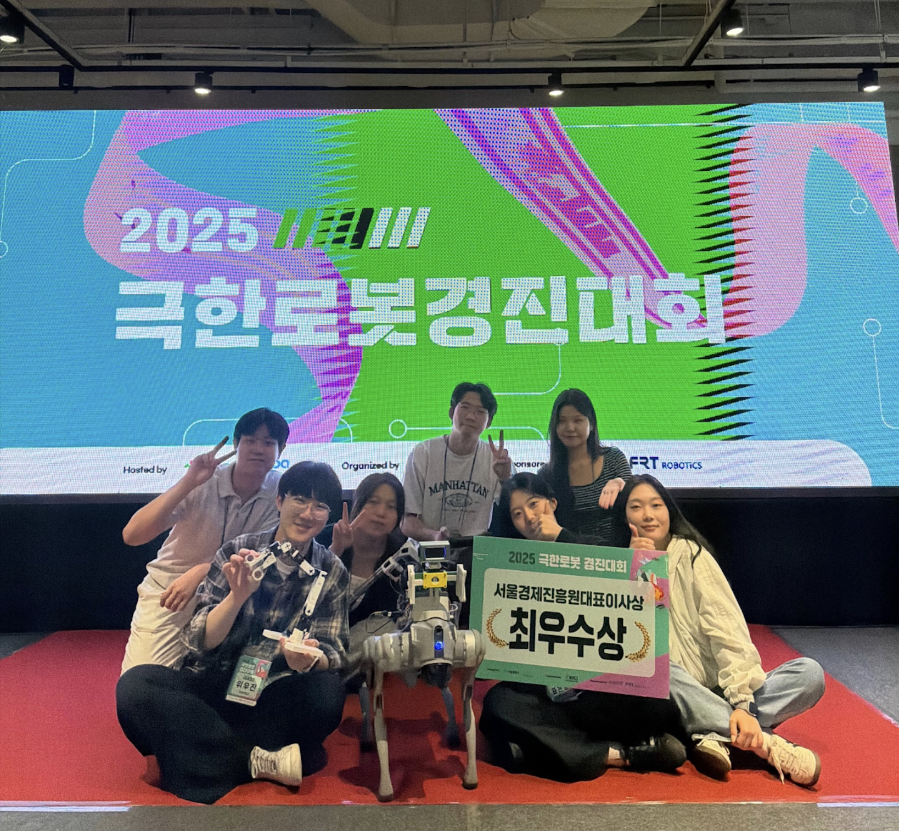

Embodied AI
Robot policies that combine perception, task context, and action generation.
I am Eunseom Pyo, a robotics engineer building robots for people.
Research focus
My research interests sit at the intersection of embodied AI, robot manipulation, and learning-based control. I am especially interested in policies that make use of visual context while remaining practical for physical robot systems.
Recent work includes vision-language-action models for manipulation and dynamic grasping approaches for aerial recovery scenarios.
Robot policies that combine perception, task context, and action generation.
Data-driven controllers for manipulation under real-world uncertainty.
Grasping and recovery systems for moving targets and mission-oriented tasks.
Awards

2025 극한로봇 경진대회
Won the Grand Prize, Seoul Business Agency CEO Award, at the 2025 Extreme Robot Competition held at COEX Seoul on October 2, 2025.
Selected work
RetoVLA studies how register tokens from vision transformers can be reused as spatial context for vision-language-action policies, improving manipulation performance while keeping the architecture efficient.
A dynamic object grasping study that conditions Action Chunking Transformers with state-estimation cues for robot manipulation in aerial recovery settings.
Ongoing interests include robust action policies, sensor-grounded robot behavior, and learning pipelines that transfer from structured experiments to practical manipulation tasks.
Publication list
Jiyeon Koo, Taewan Cho, Hyunjoon Kang, Eunseom Pyo, Tae Gyun Oh, Taeryang Kim, Andrew Jaeyong Choi. IEEE International Conference on Robotics and Automation (ICRA), 2026; arXiv:2509.21243.
Jiyeon Koo, Eunseom Pyo, Andrew Jaeyong Choi. Drones and Unmanned Systems, 2026.
Methods
Contact